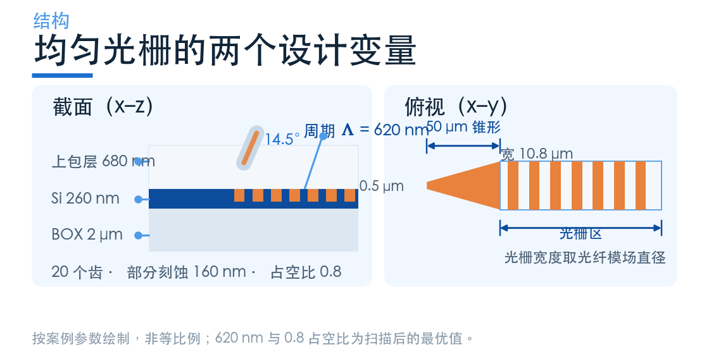
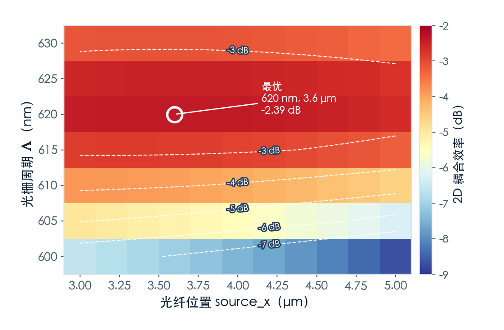
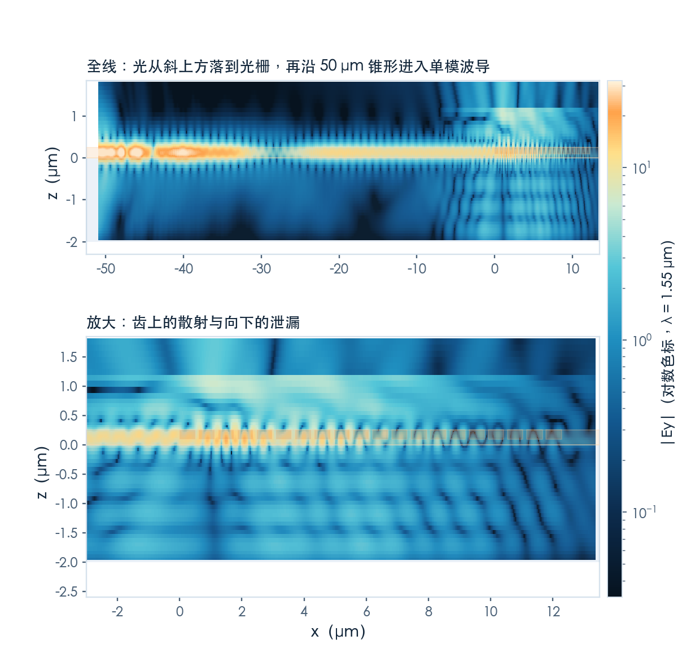
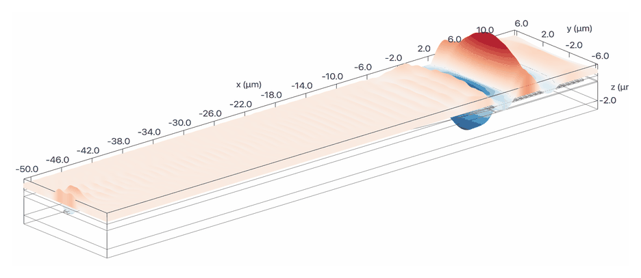
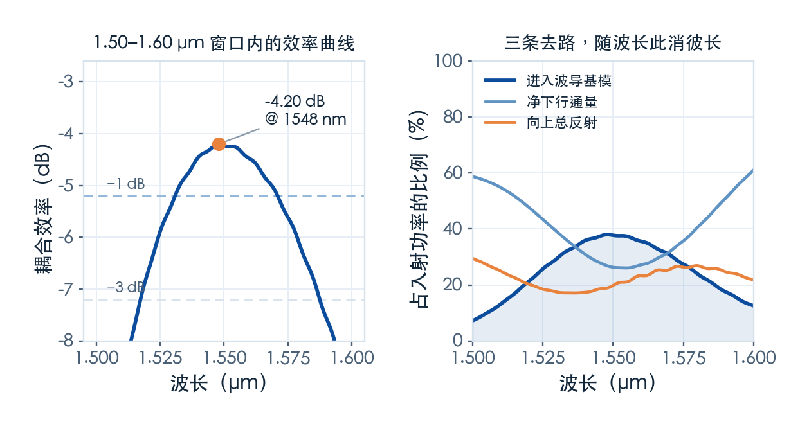

一排齿，怎么把光拐进波导？
待审稿：本文处于独立 PR 审核阶段，尚未收录为正式内容。定量结论、素材来源与授权仍需指定业内审核者核查。
这是本系列的第二篇。上一篇把地图铺开了，这一篇从最简单的一种做起：均匀线性光栅。
它只有两个设计变量——周期和光纤位置。听起来简单，但正因为简单，你能把"光为什么进不去"这件事看得最清楚。
我们用的是学习中心里的 Uniform linear grating coupler 案例，SOI 平台，器件层 260 nm，部分刻蚀 160 nm，占空比 0.8，20 个齿。

先算周期，再谈别的
上一篇给过光栅方程。要对上 1550 nm、14.5° 入射，周期该取多少？
方程里缺一个量：波导的等效折射率。而光栅区有两个折射率——没刻蚀的平板一处、刻蚀后的薄板一处。案例的做法是先建一个 2D 仿真，然后在光栅区左右两侧各切一刀做模式求解：
- 未刻蚀平板：n_eff = 2.9522
- 刻蚀后平板：n_eff = 2.1784
按 0.8 的占空比加权，代回光栅方程，得到 608 nm。
这一步值得停一下。它说明周期不是"调"出来的，是算出来的——材料的折射率、刻蚀深度、入射角一旦定死，周期就只剩一个答案。后面所有优化，都是在已经确定的那个数附近找偏差。
扫描：两个变量，一张图
算出来的 608 nm 是近似值，因为占空比加权本身就是个线性近似。真实的最优点要从仿真里找。
案例的做法很直接：周期取 600–630 nm 七档，光纤位置取 3–5 μm 十一档，一共 77 个 2D 仿真，跑一个批处理。每个仿真只做一件事——在波导端放一个模式监视器，量出有多少光变成了基模。

结果有意思的地方不在最优点，而在形状。
最优点是 620 nm、3.6 μm，耦合效率 −2.39 dB。但你看那张图：沿周期方向，颜色变化极快——620 nm 上下偏 10 nm 就掉 1 dB 以上；沿光纤位置方向却几乎是一条条水平带，从 3 μm 挪到 5 μm，效率只变一点点。
这说明两件事的敏感度完全不对称：
- 周期是硬约束。 它由相位匹配决定，工艺上周期偏 5 nm，效率就明显下降。这也解释了为什么光栅耦合器对光刻精度和温度都敏感。
- 光纤位置是软约束。 它决定入射光斑落在光栅的哪一段，影响的是模式重叠，不是相位。位置偏 1 μm，效率只掉零点几 dB。
工程含义很直接：版图上的周期必须卡死，而封装时的对准公差可以放宽一些。
3D：多了 50 μm 的锥形
2D 仿真里光栅是整个宽度上无限延伸的，但真实器件有边界。案例把 2D 的结果搬到 3D，加了两个东西：
一是宽度。光栅宽度取光纤的模场直径 10.8 μm，而单模波导只有 0.5 μm 宽，中间靠一段 50 μm 的线性锥形过渡。
二是损耗。这段锥形不是免费的。光从 10.8 μm 宽的平板模收缩到 0.5 μm 宽的条波导，模式形状一路在变，理想绝热需要很长的距离，50 μm 显然不够。


3D 结果是 −4.20 dB，峰值在 1548 nm，比 2D 的 −2.39 dB 低约 1.8 dB。有限宽度、锥形过渡和三维模式匹配都可能参与；本次没有逐项分离，不能指定锥形占比。
功率去哪了：一次完整的收支
只看 −4.20 dB 这个数，你不知道该改哪里。所以我们在同一个 3D 任务里补了三个监视器，把入射功率的去向拆开。
在 1550 nm：
- 进入波导基模：37.8%（−4.23 dB）
- 下方监视器净下行通量：26.3%（不是吸收功率）
- 向上反射总通量：19.8%（不是返回光纤模式的功率）
- 三项之和之外约 16%，未做完整模式、辐射与闭合面分解

这张图说清了三件事。
第一，净下行通量大于向上反射总通量。 26% 对 20%。BOX/硅界面会产生 Fresnel 反射，往返相位影响方向性；下方通量不能被解释成材料吸收。本次没有 BOX 厚度扫描，不能认定 2 μm 是唯一原因或加厚必然改善。
第二，波长一变，三条去路此消彼长。 往短波走，衬底泄漏冲到 59%；往长波走，它又涨回 61%。中间那段低谷正好对着效率峰值——因为相位匹配最好的时候，往上的分量最强。
第三，3 dB 带宽 69 nm，1 dB 带宽 39 nm。 两者都相对峰值定义。实际可用窗口还需要满足系统允许的绝对插损，不能仅由峰高决定。
这一篇的结论
均匀光栅的价值不在性能，在于它把每个量的作用都摊开了：
- 周期由相位匹配唯一确定，是硬约束，工艺公差要卡在几个纳米。
- 光纤位置是软约束，决定模式重叠，容差可以放到微米量级。
- 本次 2D 与 3D 结果相差约 1.8 dB，损耗来源尚未独立分离。
- 本次净下行通量大于向上反射总通量；它们都不是吸收或激光反馈的直接测量。
下一篇处理的就是"模式和相位"这两件事：把填充因子做成位置的函数，让漏出的场对上光纤的高斯形状；再把直的齿弯成圆弧，让它们聚焦到同一点。
完整 Notebook 在学习中心。国内产品入口为 tidy3d.fangzhen.cloud，注册与运行路径本次未验证，请以平台当前文档为准。